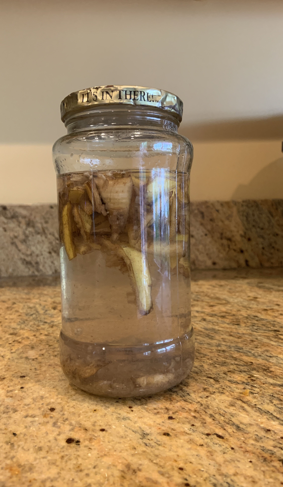

How to make Banana Peel Fertilizer
Make some Banana Peel Tea to make your little green friends happy!
What you Need
- One Clean (Pasta Sauce sized) Glass Jar
- Banana Peels
- One Gallon Water
- Scissors
Method
- Cut Banana Peels into smaller pieces

- Put the banana peels into the glass jar
- Fill the jar with water
- Close the lid of the jar tightly

- Open the lid and stir the mixture 2 times a day for 3 days
- By the end of the 3rd day, you fertilizer will be ready!
Nutrition Facts
- It has Potassium, Phosphorus, Calcium and Magnesium.
- Banana Peel tea is not a complete fertilizer for the plants that need a nitrogen, so use other nitrogen based fertilizer for those plants.